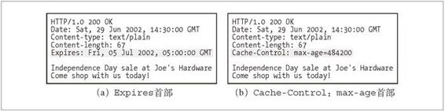

7.8 保持副本的新鲜
可能不是所有的已缓存副本都与服务器上的文档一致。毕竟，这些文档会随着时间发生变化。报告可能每个月都会变化。在线报纸每天都会发生变化。财经数据可能每过几秒钟就会发生变化。如果缓存提供的总是老的数据，就会变得毫无用处。已缓存数据要与服务器数据保持一致。
HTTP 有一些简单的机制可以在不要求服务器记住有哪些缓存拥有其文档副本的情况下，保持已缓存数据与服务器数据之间充分一致。HTTP 将这些简单的机制称为文档过期（document expiration）和服务器再验证（server revalidation）。
7.8.1 文档过期
通过特殊的 HTTP Cache-Control 首部和 Expires 首部，HTTP 让原始服务器向每个文档附加了一个“过期日期”（参见图 7-13）。就像一夸脱牛奶上的过期日期一样，这些首部说明了在多长时间内可以将这些内容视为新鲜的。

图 7-13 Expires 首部和 Cache-Control 首部
在缓存文档过期之前，缓存可以以任意频率使用这些副本，而无需与服务器联系——当然，除非客户端请求中包含有阻止提供已缓存或未验证资源的首部。但一旦已缓存文档过期，缓存就必须与服务器进行核对，询问文档是否被修改过，如果被修改过，就要获取一份新鲜（带有新的过期日期）的副本。
7.8.2 过期日期和使用期
服务器用 HTTP/1.0+ 的 Expires 首部或 HTTP/1.1 的 Cache-Control: max-age 响应首部来指定过期日期，同时还会带有响应主体。Expires 首部和 Cache-Control: max-age 首部所做的事情本质上是一样的，但由于 Cache-Control 首部使用的是相对时间而不是绝对日期，所以我们更倾向于使用比较新的 Cache-Control 首部。绝对日期依赖于计算机时钟的正确设置。表 7-2 列出了各种过期响应首部。
表7-2 过期响应首部
| 首 部 | 描 述 |
|---|---|
| Cache-Control:max-age | max-age 值定义了文档的最大使用期——从第一次生成文档到文档不再新鲜、无法使用为止，最大的合法生存时间（以秒为单位） Cache-Control: max-age=484200 |
| Expires | 指定一个绝对的过期日期。如果过期日期已经过了，就说明文档不再新鲜了 Expires: Fri, 05 Jul 2002, 05:00:00 GMT |
假设今天是美国东部标准时间（EST，Eastern Standard Time）2002 年 6 月 29 日上 午 9∶30，Joe 的五金商店正在准备进行 7 月 4 日（美国国庆日）特卖（只剩 5 天 了）。Joe 想在他的 Web 服务器上放置一个特殊的 Web 页面，并将其设置为 2002 年 7 月 5 日晚上的 EST 午夜时间过期。如果 Joe 的服务器使用的是老式的 Expires 首部，服务器响应报文（参见图 7-13a）中可能就会包含这个首部：1
1 所有 HTTP 日期和时间都会在格林尼治标准时间（GMT）过期。GMT 是穿过英国格林尼治的本初子午线（经度为零）上的时间。GMT 比美国东部标准时间早五个小时，因此 EST 的午夜就是 05∶00GMT。
Expires: Fri, 05 Jul 2002, 05:00:00 GMT
如果 Joe 的服务器使用了较新的 Cache-Control: max-age 首部，服务器响应报文（参见图 7-13b）中可能就会包含这个首部：
Cache-Control: max-age=484200
如果这还不够明确的话，可以这样来看，当前时间，EST 时间 2002 年 6 月 29 日早上 9∶30，到售卖结束时间 2002 年 7 月 5 日午夜之间有 484 200 秒。到售卖结束之前还有 134.5 小时（大约 5 天）。每小时有 3600 秒，这样到售卖结束之前还有 484 200 秒。
7.8.3 服务器再验证
仅仅是已缓存文档过期了并不意味着它和原始服务器上目前处于活跃状态的文档有实际的区别；这只是意味着到了要进行核对的时间了。这种情况被称为“服务器再验证”，说明缓存需要询问原始服务器文档是否发生了变化。
如果再验证显示内容发生了变化，缓存会获取一份新的文档副本，并将其存储在旧文档的位置上，然后将文档发送给客户端。
如果再验证显示内容没有发生变化，缓存只需要获取新的首部，包括一个新的过期日期，并对缓存中的首部进行更新就行了。
这是个很棒的系统。缓存并不一定要为每条请求验证文档的有效性——只有在文档过期时它才需要与服务器进行再验证。这样不会提供陈旧的内容，还可以节省服务器的流量，并拥有更好的用户响应时间。
HTTP 协议要求行为正确的缓存返回下列内容之一：
“足够新鲜”的已缓存副本；
与服务器进行过再验证，确认其仍然新鲜的已缓存副本；
如果需要与之进行再验证的原始服务器出故障了，就返回一条错误报文 2；
2 如果原始服务器不可访问，但缓存需要进行再验证，那么缓存就必须返回一条错误或一条用来描述通信故障的警告报文。否则，来自已移除服务器上的页面未来可能会在网络的缓存中存留任意长的时间。
附有警告信息说明内容可能不正确的已缓存副本。
7.8.4 用条件方法进行再验证
HTTP 的条件方法可以高效地实现再验证。HTTP 允许缓存向原始服务器发送一个“条件 GET”，请求服务器只有在文档与缓存中现有的副本不同时，才回送对象主体。通过这种方式，将新鲜度检测和对象获取结合成了单个条件 GET。向 GET 请求报文中添加一些特殊的条件首部，就可以发起条件 GET。只有条件为真时，Web 服务器才会返回对象。
HTTP 定义了 5 个条件请求首部。对缓存再验证来说最有用的 2 个首部是 If-Modified-Since 和 If-None-Match。3 所有的条件首部都以前缀“If-”开头。表 7-3 列出了在缓存再验证中使用的条件请求首部。
3 其他条件首部包括 If-Unmodified-Since（在进行部分文件的传输时，获取文件的其余部分之前要确保文件未发生变化，此时这个首部是非常有用的）、If-Range（支持对不完整文档的缓存）和 If-Match（用于与 Web 服务器打交道时的并发控制）。
表7-3 缓存再验证中使用的两个条件首部
| 首 部 | 描 述 |
|---|---|
| If-Modified-Since:<date> | 如果从指定日期之后文档被修改过了，就执行请求的方法。可以与Last-Modified 服务器响应首部配合使用，只有在内容被修改后与已缓存版本有所不同的时候才去获取内容 |
| If-None-Match:<tags> | 服务器可以为文档提供特殊的标签（参见ETag），而不是将其与最近修改日期相匹配，这些标签就像序列号一样。如果已缓存标签与服务器文档中的标签有所不同，If-None-Match 首部就会执行所请求的方法 |
7.8.5. If-Modified-Since:Date再验证
最常见的缓存再验证首部是 If-Modified-Since。If-Modified-Since 再验证请求通常被称为 IMS 请求。只有自某个日期之后资源发生了变化的时候，IMS 请求才会指示服务器执行请求：
如果自指定日期后，文档被修改了，If-Modified-Since 条件就为真，通常 GET 就会成功执行。携带新首部的新文档会被返回给缓存，新首部除了其他信 息之外，还包含了一个新的过期日期。
如果自指定日期后，文档没被修改过，条件就为假，会向客户端返回一个小的 304 Not Modified 响应报文，为了提高有效性，不会返回文档的主体。4 这 些首部是放在响应中返回的，但只会返回那些需要在源端更新的首部。比如， Content-Type 首部通常不会被修改，所以通常不需要发送。一般会发送一个新的过期日期。
4 如果有一个不认识 If-Modified-Since 首部的老服务器收到了条件请求，它会将其作为一个普通的 GET 解释。在这种情况下，系统仍然能够工作，但由于要对未修改的文档数据进行不必要的传输，所以效率会比较低。
If-Modified-Since 首部可以与 Last-Modified 服务器响应首部配合工作。原始服务器会将最后的修改日期附加到所提供的文档上去。当缓存要对已缓存文档进行再验证时，就会包含一个 If-Modified-Since 首部，其中携带有最后修改已缓存副本的日期：
If-Modified-Since: <cached last-modified date>
如果在此期间内容被修改了，最后的修改日期就会有所不同，原始服务器就会回送新的文档。否则，服务器会注意到缓存的最后修改日期与服务器文档当前的最后修改日期相符，会返回一个 304 Not Modified 响应。
例如，如图 7-14 所示，如果你的缓存在 7 月 3 日对 Joe 的五金商店的 7 月 4 日特卖声明进行再验证，就会收到一条 Not Modified 响应（参见图 7-14a）。但如果你的缓存在 7 月 5 日午夜售卖结束后对文档进行再验证，缓存就会收到一个新文档，因为服务器内容已经发生了变化（参见图 7-14b）。
图 7-14 如果未发生变化，If-Modified-Since 再验证会返回 304 响应，如果发生了变化，就返回带有新主体的 200 响应
注意，有些 Web 服务器并没有将 If-Modified-Since 作为真正的日期来进行比对。相反，它们在 IMS 日期和最后修改日期之间进行了字符串匹配。这样得到的语义就是“如果最后的修改不是在这个确定的日期进行的”，而不是“如果在这个日期之后没有被修改过”。将最后修改日期作为某种序列号使用时，这种替代语义能够很好地识别出缓存是否过期，但这会妨碍客户端将 If-Modified-Since 首部用于真正基于时间的一些目的。
7.8.6 If-None-Match：实体标签再验证
有些情况下仅使用最后修改日期进行再验证是不够的。
有些文档可能会被周期性地重写（比如，从一个后台进程中写入），但实际包含的数据常常是一样的。尽管内容没有变化，但修改日期会发生变化。
有些文档可能被修改了，但所做修改并不重要，不需要让世界范围内的缓存都重装数据（比如对拼写或注释的修改）。
有些服务器无法准确地判定其页面的最后修改日期。
有些服务器提供的文档会在亚秒间隙发生变化（比如，实时监视器），对这些服务器来说，以一秒为粒度的修改日期可能就不够用了。
为了解决这些问题，HTTP 允许用户对被称为实体标签（ETag）的“版本标识符”进行比较。实体标签是附加到文档上的任意标签（引用字符串）。它们可能包含了文档的序列号或版本名，或者是文档内容的校验和及其他指纹信息。
当发布者对文档进行修改时，可以修改文档的实体标签来说明这个新的版本。这样，如果实体标签被修改了，缓存就可以用 If-None-Match 条件首部来 GET 文档的新副本了。
在图 7-15 中，缓存中有一个实体标签为 v2.6 的文档。它会与原始服务器进行再验证，如果标签 v2.6 不再匹配，就会请求一个新对象。在图 7-15 中，标签仍然与之匹配，因此会返回一条 304 Not Modified 响应。
图 7-15 因为实体标签仍然匹配， If-None-Match 再验证成功
如果服务器上的实体标签已经发生了变化（可能变成了 v3.0），服务器会在一个 200 OK 响应中返回新的内容以及相应的新 Etag。
可以在 If-None-Match 首部包含几个实体标签，告诉服务器，缓存中已经存在带有这些实体标签的对象副本：
If-None-Match: "v2.6"
If-None-Match: "v2.4","v2.5","v2.6"
If-None-Match: "foobar","A34FAC0095","Profiles in Courage"
7.8.7 强弱验证器
缓存可以用实体标签来判断，与服务器相比，已缓存版本是不是最新的（与使用最近修改日期的方式很像）。从这个角度来看，实体标签和最近修改日期都是缓存验证器（cache validator）。
有时，服务器希望在对文档进行一些非实质性或不重要的修改时，不要使所有的已缓存副本都失效。HTTP/1.1 支持“弱验证器”，如果只对内容进行了少量修改，就允许服务器声明那是“足够好”的等价体。
只要内容发生了变化，强验证器就会变化。弱验证器允许对一些内容进行修改，但内容的主要含义发生变化时，通常它还是会变化的。有些操作不能用弱验证器来实现（比如有条件地获取部分内容），所以，服务器会用前缀“W/”来标识弱验证器。
ETag: W/"v2.6"
If-None-Match: W/"v2.6"
不管相关的实体值以何种方式发生了变化，强实体标签都要发生变化。而相关实体在语义上发生了比较重要的变化时，弱实体标签也应该发生变化。
注意，原始服务器一定不能为两个不同的实体重用一个特定的强实体标签值，或者为两个语义不同的实体重用一个特定的弱实体标签值。缓存条目可能会留存任意长的时间，与其过期时间无关，有人可能希望当缓存验证条目时，绝对不会再次使用在过去某一时刻获得的验证器，这种愿望可能不太现实。
7.8.8 什么时候应该使用实体标签和最近修改日期
如果服务器回送了一个实体标签，HTTP/1.1 客户端就必须使用实体标签验证器。如果服务器只回送了一个 Last-Modified 值，客户端就可以使用 If-Modified-Since 验证。如果实体标签和最后修改日期都提供了，客户端就应该使用这两种再验证方案，这样 HTTP/1.0 和 HTTP/1.1 缓存就都可以正确响应了。
除非 HTTP/1.1 原始服务器无法生成实体标签验证器，否则就应该发送一个出去，如果使用弱实体标签有优势的话，发送的可能就是个弱实体标签，而不是强实体标签。而且，最好同时发送一个最近修改值。
如果 HTTP/1.1 缓存或服务器收到的请求既带有 If-Modified-Since，又带有实体标签条件首部，那么只有这两个条件都满足时，才能返回 304 Not Modified 响应。